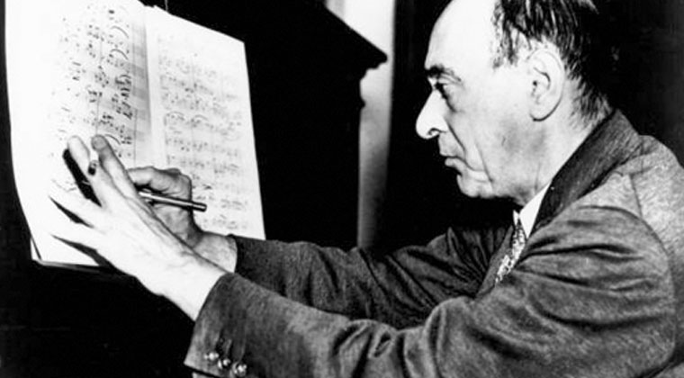

Arnold Schoenberg was an Austrian composer, born in Vienna in 1874. Schoenberg started composing in childhood and received lessons in harmony, counterpoint, and composition from his friend Alexander von Zemlinsky. In 1897 Schoenberg’s String Quartet in D Major became his first publicly performed composition and marked the start of his professional career as a composer. In his early years Schoenberg was influenced by the two most prominent German composers of the late Romantic period, Wagner and Brahms. In 1899 he composed Verklärte Nacht, a highly chromatic string sextet which showed Wagner’s influence on his sense of harmony. Schoenberg continued on this artistic trajectory until around 1907 and 1908 when he started writing atonal music. He wanted to completely free himself from the constraints of key centers and discarded even the highly flexible and chromatic tonality of Wagner's music in favor of experimentation with quartal and whole tone based harmony. In 1921 Schoenberg created a method for creating entire pieces out of what he called “tone rows”. He would take the 12 notes of the chromatic scale and organize them into a sequence, or a tone row, and the tone row could be inverted, fragmented, played in reverse order, turned into a line in counterpoint, and manipulated in all sorts of ways in order to create a full piece. This he called the “12-tone method”, and he continued to compose with it for the rest of his life, though he made occasional forays back into tonality.
Schoenberg became influential as a teacher in the years following his invention of the 12-tone method and his pupils Anton Webern and Alban Berg would go on to become quite influential as atonal (or 12-tonal) composers themselves. After being fired from his teaching post in Berlin by the Nazis, Schoenberg moved to the United States where he continued composing and teaching, with John Cage as a notable pupil. Schoenberg died in 1951. While 12-tone music isn’t ubiquitous as Schoenberg hoped it would become, he did have immense influence on the direction of 20th century classical music and is celebrated for that today.